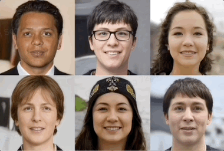
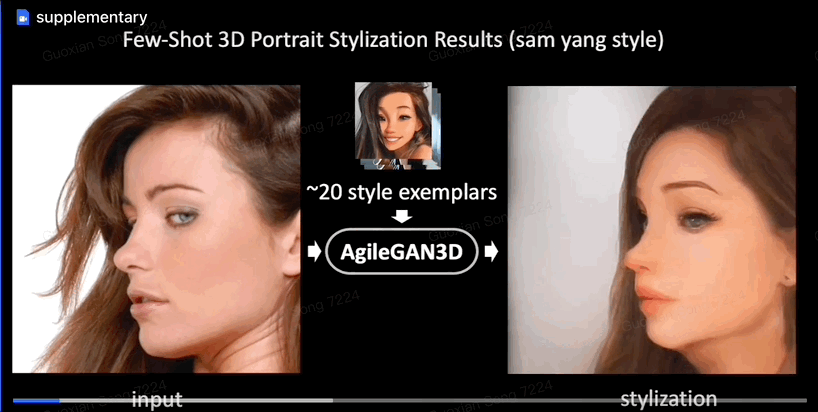

OmniAvatar: Geometry-Guided Controllable 3D Head Synthesis |
|  | PanoHead: Geometry-Aware 3D Full-Head Synthesis in 360° |
|  | AgileGAN3D: Few-Shot 3D Portrait Stylization by Augmented Transfer Learning |
|
|
AvatarGen: A 3D Generative Model for Animatable Human Avatars |
H-NeRF: Neural Radiance Fields for Rendering and Temporal Reconstruction of Humans in Motion |